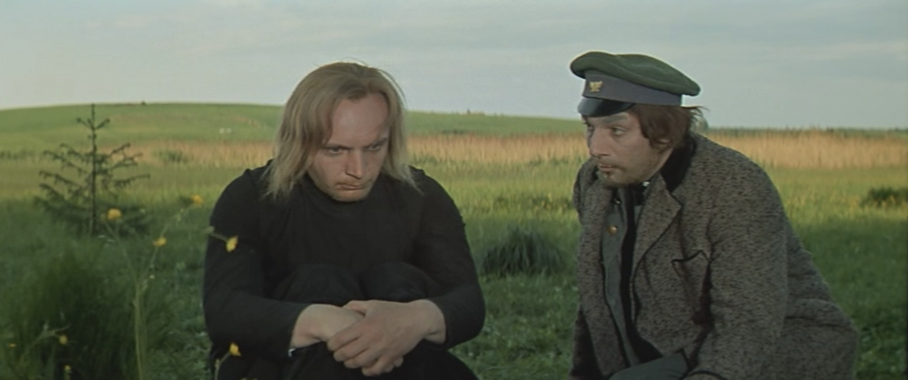
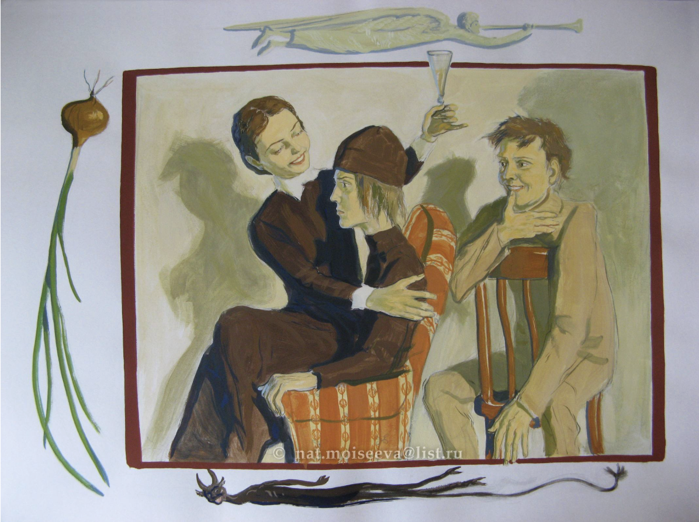

Book 7 Notes
Chapter 1. The Odor of Corruption
Ferapont leads rebellion against Zosima
Rakitin is present (328)
Alesha: tears like a little child"(329)
Alesha "future hero" (329)
Zosima a holy fool (331)
Zosima attracts people by love not by miracles (331)
Scandal scene (334-337)
Ferapont leads the rebellion agaisnt Zosima: no miracle, hence no holiness (333-334)
Ferapont "was supposedly a holy fool" (334), not the real one
Paissy: "It is not for men to judge, but for God" (335)
Paissy to Ferapont: "You drive the unclean one, and it is perhaps hum that you serve" (335).
Paissy to Alesha: "Can it be that you, too, are with those of little faith?" (337)

Fig. 1. Alesha and Rakitin
The Brothers Karamazov, tv series (dir. Ivan Pyryev, USSR 1968)
Chapter 2: An Opportune Moment
Rakitin is the demon who tempts Alesha
Rakitin calls Ivan Vanechka, he feels equal or even superior to Ivan whose moral fall (departure to Moscow) he enjoys.
No Rakitin craves moral fall of Alyosha: sausage, vodka, Grushenka (343).

Fig. 2. Alesha, Grushenka, and Rakitin at Grushenka's
artist Natalya Moiseeva (2000s)
Chapter 3. An Onion
Grushenka is 22 at the time when the action of the novel is taking place (343).
lives next to the Cathedral Square (343)--must be a good person, at least in the future :)
from clergy (344)
had gotten into ... "gescheft" (344)
Grushenka "leaped ... onto his knees" (348)
Alesha about Grushenka: "I came here looking for a wicked soul ... but I found a true sister ... a loving soul" (351).
The Onion Parable (352-353)
This is a folk story (cf. Zosima’s room, p. 32)
Guardian angel argues with God
Onion—weeping/redemption.
She claims the onion as her personal vehicle of salvation—absence of love for others==hell.
a wicked woman: "it's my onion, not yours"(352).
Onion breaks.
meaning of the parable:
The story demonstrates the vastness of God's mercy
in providing a chance for even the wicked to be saved.
However, it ultimately places the
responsibility for salvation in the hands of the individual,
whose own pride can undo the greatest opportunities for grace
the narrator is Grushenka
Grushenka: "I'll take the knife with me today" (354).
Grushenka repents that she tries to seduce Alesha
Grushenka ab. Alesha: "he is the first to pity me" (357).
Alesha does not judge her
Rakitin gets mad because he cannot destroy Alesha (358). He does not fulfill his narrative function: to bring corruption to the innocent.
- Cana of Galilee
miracle 1: she (Grushenka) didn't take a knife (360)
miracle 2: In the monastery miracle that nobody but Alesha notices.
miracle 3 in the John's gospel story: water to wine
narrative stance: “The Feast of Cana” episode is a dramatic form of narration, the movement between objective and subjective (we see this first as objective and then it becomes Alesha’s vision)